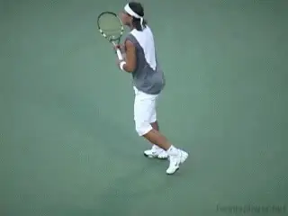
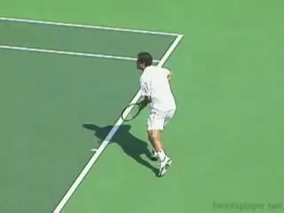
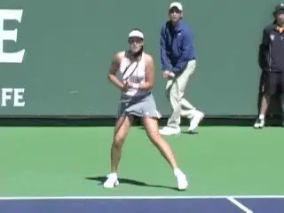
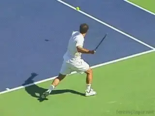
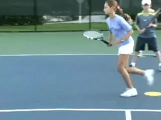
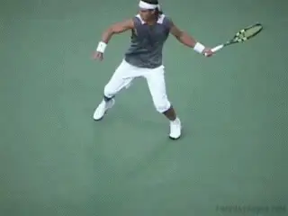
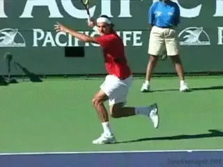
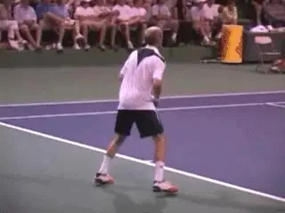
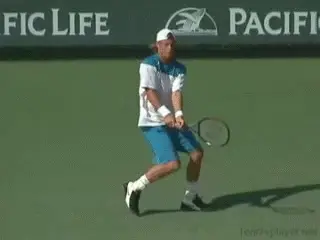
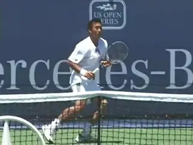

Contact Moves: The Power Move¶
David Bailey

Top players use the Power Move when they are pushed wide on the run.
In previous articles, we've looked at the Aggressive and Neutral Contact Moves. (Click Here.) Now it's time to look at the Defensive Contact Moves.
We'll start by looking at what I call the Power Move, the basis for the running forehand. Then in future articles on the Defensive Contact Moves we'll look at the two other patterns, the Reverse Spin and the Mogul.
I originally developed the concept of the Contact Move to help us understand the incredible diversity of movements used by high level players. These movements include amazing combinations of steps to the ball, hitting stances, movement of the feet during and after the contact, balancing steps, and, equally important, recovery steps.
There are multiple variations of all these elements, and they can be combined in many, many ways depending on the type of ball the player is facing. The Contact Move concept lets us sort all this out.
The defensive Contact Moves I'm going to analyze are the footwork patterns used by the top pros when they are challenged and pushed wide or far back in the court.

Pete Sampras used the Power Move to turn defense into offense.
But when we talk about "defensive" contact moves let's understand what that means. We use defensive Contact Moves when we are challenged and forced to hit the ball off running steps.
But the idea isn't necessarily to play defensive tennis, and defensive Contact Moves aren't necessarily associated with "pushing" or a defensive strategic style. The idea behind these Contact Moves is something else: to make a successful shot from a defensive position. This can be a very aggressive shot, or even a winner.
What we are talking about is a situational response to what is happening in a given point. A Defensive Contact Move can help you hit a shot that will to get back to a neutral position in the point, or it can be the basis for counterattack.
This is particularly true of our defensive footwork pattern in this article, the Power Move. Some players use the Power Move primarily to attempt winners on the run. The Power Move was the footwork pattern used by the great Pete Sampras to hit his famed running forehand. Using it, he was often able to hit clean winners from very wide positions in the court. You see variations on this strategy used at times by other top players as well.
The Power Move

Ana Ivanovic perfectly demonstrates the running forehand Power Move.
So, what exactly is a Power Move? And how can you learn to hit it? The components are somewhat complex and difficult to see with the naked eye when the top players are on the run. So, let's break it down step by step.
A Power Move resembles an explosive, elevated lunge step.
It begins with the player on the dead run.
Then, just before the start of the forward swing, the player achieves an open running stance.
The forward swing starts from here.
After the contact, both feet come off the ground, as the player continues to take at one additional running step.
Unlike most open stance shots, the hips (and sometimes the shoulders) remain relatively closed through contact with the Power Move. This is when compared to the amount of rotation the players normally use on their forehands. As the player lands, the rear leg kicks directly backwards. This is critical for the player to maintain balance.
The reduced rotation has to do with the pattern of the footwork. The player is on the dead run and moving basically sideways. After the hit he lands on the front foot, continuing in the same direction he was moving. Usually this means when the front foot lands, it is more or less pointing at the sideline. With the front foot facing sideways, the rotation is naturally reduced.

The landing and the breaking step are followed by a crossover step and the recovery to a neutral position.
Recovery
The recovery starts with the rear leg coming around the body after the kick back to make a breaking step. Using the outside foot, the player is now able to push back the other way and begin the recovery toward the middle.
Since the player is on the run and usually wide in the court, the first step back should almost always be a crossover step. This can be followed by one or more additional running steps, depending on the distance the player has to travel, and what the opponent has done with the next ball.
After the crossover, and/or running steps, the player will then use one or more shuffle steps to recover to the neutral position and prepare to move to the next ball.

Developing the Power Move elements before hitting balls can help players at all levels.
Progression
As I said, the Power Move is complex, so let's go over the steps one more time. Watch in the animation of the junior player. I use colored dots to train elite junior players to master the Power Move first without the ball. This is a great approach for players at any level who want to improve their running forehands.
The progression is:
running steps toward the ball
dropping into a running open stance
contact with both feet in the air
the landing on the front foot
the rear leg kicking back for balance
the breaking step with the rear foot
the crossover step to begin the recover
and finally, shuffle steps to regain a neutral ready position.

The reverse finish is associated with the reduced body rotation on the Power Move.
Racket Path
Given the direction the body is moving and also the speed it makes sense that the racket path on the forehand Power Move is usually more upward, with the finish over the player’s head.
This is the "reverse forehand" finish described by Robert Lansdorp. (Click Here.) We can see this most famously in the Sampras running forehand, but the same swing pattern is used by most of the top pros.
Without the torso rotation to drive the racket around and forward, it's natural for the swing to accelerate upward over the head, with the eventual finish moving backwards away from the player.

Watch how Federer's step forward allows him to rotate more fully.
Cutting Off the Angle
An exception to the shape of the swing pattern is when the player is able to move forward on a diagonal while still on the run, or simply take the final step more forward at an angle. When the final running step is more forward, you are less likely to see the reverse finish.
The player is also able to rotate the torso according to a more normal pattern and the racket tends to extend further forward before following through. This is a good goal for any player when on the run--to try to move forward and cut down the angle of the oncoming shot.

Though less common, top players use the Power Move on both two-handed and one-handed backhands.
Backhand Power Moves
The Power Move is far less common in pro tennis on the backhand, but you still the top players execute it at times on both the one-handed and two-handed backhands.
The progression for the Power Move on the backhand is basically the same as for the forehand. The player is on the run full speed toward the sideline. Just prior to the start of the forward swing, he drops into an open running stance.
During and after the hit--as with the forehand--the player is airborne. The landing is with the front foot, and the back foot again kicks back for balance.

When two-handed players land with a forward diagonal step, they can rotate through the Power Move.
The pattern of the recovery is also the same. The outside foot swings around and makes a breaking step. This is followed by one or more crossover steps, and then shuffle steps to recover for the next shot.
As with the forehand, on the backhand power moves the player typically lands with the front foot facing the sideline. On the two-hander this means there is less torso rotation than in the regular stroke, also the case with the forehand.
But again, like the forehand, the two-handed player may step forward on a diagonal, helping to cut off the angle of the oncoming shot. In this case the front foot lands at an angle facing more forwards toward the net. From this position the player gains the ability to rotate more into the shot as on a typical groundstroke.

The Power Move on the one-hander with the torso staying sideways and the swing extending.
One-Handed Power Move
On the Power Move, with the one-handed backhand, the torso tends to stay more sideways naturally, as is the case with the one-handed stroke in general. This is true whether the front foot lands pointing sideways or more forward toward the net. Again, watch the sequence of the running steps, the running open stance, the front foot landing, the kick back and the break step.
The swing pattern with the arm and racket is similar to any other one-handed backhand with the hitting arm straight and extending outward to the target with the shoulders sideways.
So that's it for the Power Move. Next, defensive Contact Moves when the player is pushed backwards off the baseline rather than wide. Stay Tuned!

David Bailey is a native Australian who has spent 15 years studying tennis at the professional level. He has developed a new language for one of the most complex and misunderstood aspects of the game, footwork and court movement. David has worked with world class players and coaches, national tennis associations and top academies, and has presented at coaching seminars around the world. His teaching system, the Bailey Method, has become a regular part of the coaching curriculum at the Nick Bollettierri Tennis Academy, where it is personally endorsed by Nick
Visit David’s Website! Click Here!
To Contact David directly Click Here!
Dave Bailey Video Lessons & Transcripts
Full Illustrated Article: Golden Move #12: The Power Move
21. Lesson 5 Simple Grounded Transitional Volleys
Video Transcript
So, here is lesson five. We're now looking at grounded volleys, where we're moving into the net, transitional volleys, probably more like low volleys, where we're coming in with two different footwork patterns, but also when we're at the net, the ball coming straight at us, and we're shifting left and right with our forehand and backhand. Again, I'm going to put the reference points down cuz I really like to keep the feet wide and have a start and a finish. So, again, we'll put it about this wide apart, not too far, so we can practice our footwork.
And remember, being grounded is all about staying low and being nice and rhythmical through the ball. So, let's have a look at the transitional grounded volleys. Maybe this time, instead of twisting, I think we should bounce cuz it's a little bit more specific for the volleys. So, we're bouncing, split, short backswing, rhythm through with the feet, and split. That's the forehand. Let's do it again. Bouncing, take the racket back with the feet, rhythm through, replace the feet, gliding nice and low.
Backhand, bouncing, split, turn, rhythm through, come through and split, and back. Bouncing, turn, rhythm through on the backhand, and stay nice and low. Let's try the karaoke, where our foot's in behind us, a bit closer to our body this time. Split, turn, foot in behind cuz it's close to our body, go down the line, and split. So, bouncing, karaoke forehand, foot in behind, cut around it, and go. Then the backhand. Bouncing, split, foot in behind, rhythm through it, and split. Karaoke backhand again, turn first, stay low, foot in behind, and stay here for this cuz now we're going to go shift.
Split, turn, shift, hit the forehand is at the body. Again, split, turn, shift, hit it through the middle. Backhand, split, turn, shift, take it as a backhand. And finally again, bouncing, split, shift, hit it through the middle, and finish low. So, grounded combination grounded volleys as we transitional through. So, split, turn, rhythm low, come in and split. Split, turn, rhythm through low on the backhand. Split, karaoke foot in behind. Split nice and wide, nice and soft. Split, karaoke foot in behind, glide through nice and low.
Stay up. Shift, hit the forehand. Split, shift, hit the backhand. Rhythm through on the low one. Come through and split. Good backhand. Make sure you come in and split. Rhythm through. Good. And then the karaoke foot in behind. Foot in behind. Good. Come in and split. Backhand. Karaoke foot in behind. Okay, stay up. Shift out of the way. Forehand shift. Backhand shift. Come back and split. Finish. Excellent. >> [music] >> Oh. Oh. Oh. Oh.
16. Lesson 15 Simple Transitional and Finishing Transferring Volleys
Video Transcript
Level four, lesson 15. We're looking at volleys where I transferring from one foot to the other. Moving in with what I call a low traveling transfer and then a put away high transfer. And then a lunge volley which is the power move. So it's a low volley, a high volley, a lunge volley but using transferring footwork. So let's start off with the forehand traveling transfer low volley. So split, travel through it, come and split. So let's have a look at that again.
So split. One foot to the other, stay low and split. Then the backhand bouncing low backhand transfer volley. Land on the other foot, split. And here. Split, travel through it, low volley. Now we do the high. So high volley, transfer crosscourt. High volley, transfer. Then the backhand. High volley, transfer. High volley, transfer. Then the power move, lunge volley. Drop, lunge, break, come back. Drop, lunge. There's your power move to the side. Then the backhand, split, drop, power move, break, come back, bouncing, drop, lunge, power move, come back and finish.
Combination transfer volley. Here we go. So travel on the low one, come in and split. Come back. Travel on the backhand. Low volley, come in and split. Then the high volley, high transfer. Then the backhand, high transfer. Then the lunge. So power move, come back and then the lunge, power move, come back and split. Low volley, transfer, come in. Good. And then backhand, low volley. Trans- Good. And then the high transfer. Go. High transfer. Then the high transfer. Nice. Then the power move where you Go.
Lunge. Come back. And then the power move. Go. Come back. And bounce, bounce. Yes.
← Previous | Footwork Home | Next →